In Part A I use a pretrained text-to-image flow model to implement samplers, classifier-free guidance, image editing, visual anagrams and hybrid images.
In Part B I train flow matching models from scratch on MNIST.
Convention. Time 0 is pure Gaussian noise and time 1 is a clean image, with
$x_t = (1-t)\,\epsilon + t\,x_1$ and path velocity $v = x_1 - \epsilon$.
Part A uses CFG as $v_c + w(v_c - v_u)$ with $w=7$, while Part B uses $v_u + \gamma(v_c - v_u)$ with $\gamma=5$.
Part A: Exploring the Power of Flow Models
1. Visualizing Training and Sampling
1.1 Constructing Noisy Training Inputs
I implemented interpolate(image, noise, t) = (1 - t) * noise + t * image, which scales the image as well as
adding noise. I checked both endpoints: $t=0$ returns the noise exactly and $t=1$ returns the image exactly.
One noise tensor (seed 180) was sampled and reused at $t = 0.25, 0.50, 0.75$. My own image is a flower field with mountains in the background.
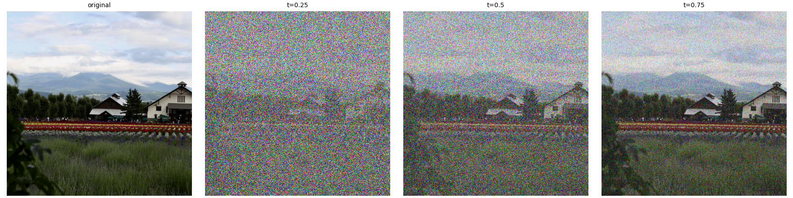
Original, then $t = 0.25$, $0.50$, $0.75$. Smaller $t$ means more noise; larger $t$ keeps more of the image.
1.2 Classical Denoising
Since the image part of $x_t$ is scaled by $t$, I first divide by $t$ to restore the amplitude, then apply a Gaussian blur.
I swept $\sigma \in \{1, 2, 4, 8, 16\}$ and kept the $\sigma$ with the lowest MSE to the clean image.
Blurring averages nearby pixels, which cancels independent zero-mean noise, but it also removes real image detail.
Dividing by $t$ only fixes the amplitude and does not remove any noise; it actually amplifies the noise by $1/t$.
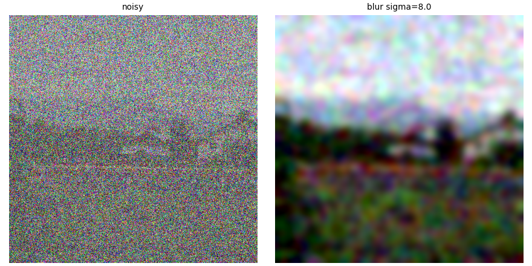
$t = 0.25$: noisy input (left) and best Gaussian blur (right).
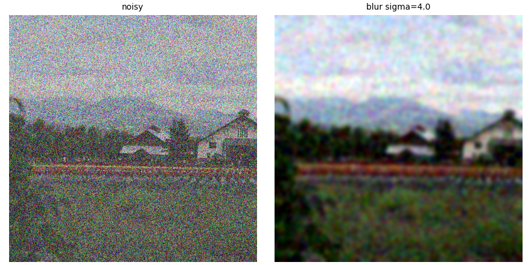
$t = 0.50$: noisy input (left) and best Gaussian blur (right).
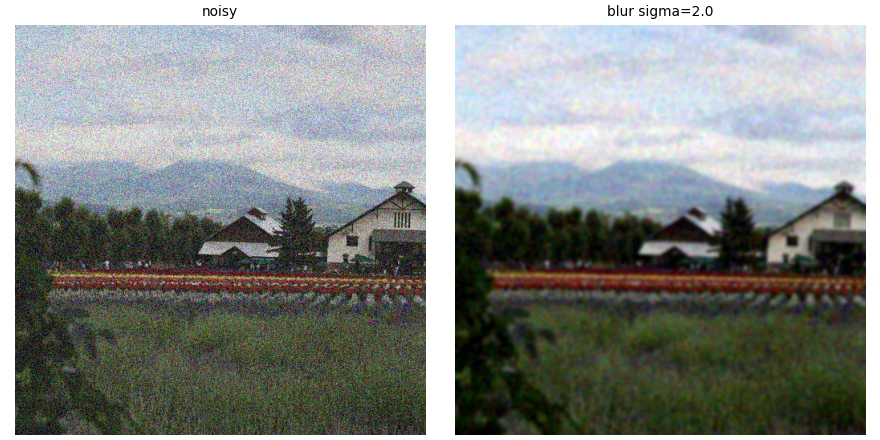
$t = 0.75$: noisy input (left) and best Gaussian blur (right).
At t = 0.75 the best σ was 8.0, at t = 0.50 it was 4.0, and at t = 0.25 it was 2.0 (in terms of MSE).
Noisier inputs need a stronger blur because more averaging is required to cancel the noise,
but a stronger blur also erases edges and texture.
The result is a blurry image at every noise level, and at t = 0.25 the noise is too strong for any blur to recover a usable image.
This is a fixed filter that has no knowledge about what the images look like, so it can only smooth, resulting in a blurry and smoothed image.
1.3 One-Step Denoising
Using the pretrained velocity predictor $v_\theta(x_t, t, c)$ with the prompt "a high quality photo", I extrapolate to the clean
endpoint with one prediction: $\hat{x}_1 = x_t + (1-t)\,v_\theta(x_t, t, c)$. The network outputs velocity, not noise,
so I add $(1-t)v$ instead of subtracting a noise estimate.
The one step estimate is better than the Gaussian blur because the model has learned what natural images look like.
It can restore structure rather than just smoothing. As the input gets noisier, the estimate gets worse.
From a very noisy input many clean images are plausible,
and one step predicts a blend of them, so the output is smooth and lacks fine detail.
We observe that as t increases, the input is closer to the clean image where details are sharper and more visible.
1.4 Visualizing Velocity
Since I know the original image and the noise, the exact update that would recover the image is
$(1-t)\,v_{gt} = (1-t)(x_1 - \epsilon) = x_1 - x_t$. I compare it with the model's predicted update $(1-t)\hat v_t$.
The error heatmap is the per-pixel RMS difference over RGB:
$E_t = \sqrt{\operatorname{mean}_{RGB}\big[(1-t)(\hat v_t - v_{gt})\big]^2}$, computed before any display scaling or clipping.
All updates share one symmetric RGB scale (zero is mid-gray), and all error maps share the same limits.
The ground truth update contains the noise to be removed together with the missing image content which looks noisy. The predicted update
is much smoother as the model does not know the exact noise sample. Instead, it predicts the average direction toward the clean image.
The error is therefore concentrated where the noise and fine details are, and we can see that the overall error reduces from t = 0.25, 0.50 to 0.75.
1.5 Iterative Denoising with Euler Sampling
One-step denoising is inaccurate because the velocity field changes along the path. Instead we now take small steps and recompute the velocity each time.
$x_{t+h} = x_t + h\, v_\theta(x_t, t, c)$. euler_sample(x_start, t_start, step_size, velocity) shortens the final step so it ends exactly at
$t=1$, and returns the final image and all saved states. I validated it on a constant velocity field, including a start time that needs a shortened last step
(50 steps from $t=0$, 25 from $t=0.5$, and 4 from $t=0.93$ with $h=0.02$). Starting from the $t = 0.50$ noisy image, 25 updates with $h = 0.02$ were used.
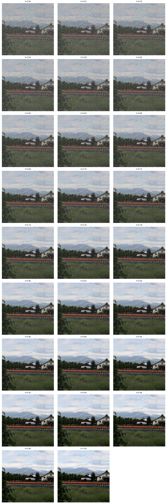
Initial state, every fifth update, and the final image, labeled by time.
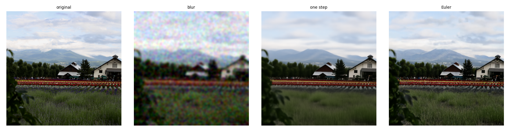
Original, Gaussian blur, one-step estimate, and Euler denoising from the same $t = 0.50$ input.
Euler denoising gives the sharpest and most realistic result. The Gaussian blur is blurry, the one-step estimate is smooth and loses detail, and the iterative
sampler adds detail progressively while following the changing velocity. It generates plausible detail that can differ from the original, so it is realistic but
not an exact reconstruction.
1.6 Generating Images from Noise
Setting $t_{start} = 0$ and passing random Gaussian noise as x_start with euler_sample turns the denoiser into a generator.
These are five samples (seeds 180 to 184) with the prompt "a high quality photo" and $h=0.02$ (50 Euler updates), without guidance.
Five samples without CFG, seeds 180 to 184.
The subjects generated look very mashed and alien-like because the generic prompt like this does not pin down a subject, so the model falls back on whatever is most common in its training data.
2. Conditional Generation and Guidance
2.1 Classifier-Free Guidance (CFG)
I evaluate the same $x_t$ and $t$ with the prompt embedding and with the empty-string embedding, getting $v_c$ and $v_u$, and combine them as
$v_{cfg} = v_c + w\,(v_c - v_u)$. With $w = 0$ this reproduces the conditional prediction, which I checked numerically.
Below are five samples with $w = 7$ and $h = 0.02$, from the same initial noises as Section 1.6.
Five samples with CFG, $w = 7$, seeds 180 to 184 (same noises as 1.6).
Compared with Section 1.6, CFG pushes each sample toward what the prompt describes and away from the unconditional prediction. This gives higher
quality and stronger prompt alignment, at the cost of diversity, because the samples are pulled toward the same "high quality photo" mode.
Here, the faces are more well defined as compared to the previous section where facial features were more distorted and alien-like.
The model has learned what a "high quality photo" looks like, so it is able to generate more realistic images.
3. Creative Applications
3.1 Image-to-Image Editing
edit builds $(1 - t_{start})\epsilon + t_{start}\,x_1$ and then integrates from $t_{start}$ to 1 with CFG ($w=7$, $h=0.02$) and the prompt
"a high quality photo". The more noise I add (smaller $t_{start}$), the larger the edit, because the model has to "hallucinate" more of the image to project it back onto the
manifold of natural images (this is the idea behind SDEdit). The starting times are $0.02, 0.04, 0.06, 0.10, 0.14, 0.25, 0.50$, left to right after the original.
Campanile. The result gradually looks more like the original as $t_{start}$ grows.
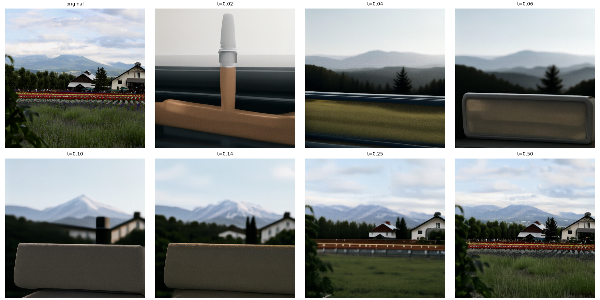
My image 1 (flower field with mountains).
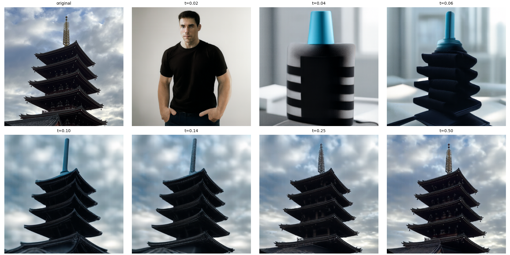
My image 2 (Japanese temple).
At t = 0.5, the original structure (layout, colors, details) starts to return for each image.
Editing web and hand-drawn images
The procedure works particularly well on non-realistic inputs, because projecting a painting, sketch or scribble onto the natural image manifold turns it into
a photo-like image while keeping its layout. I used one image from the web (harajuku wave) and two of my own drawings.
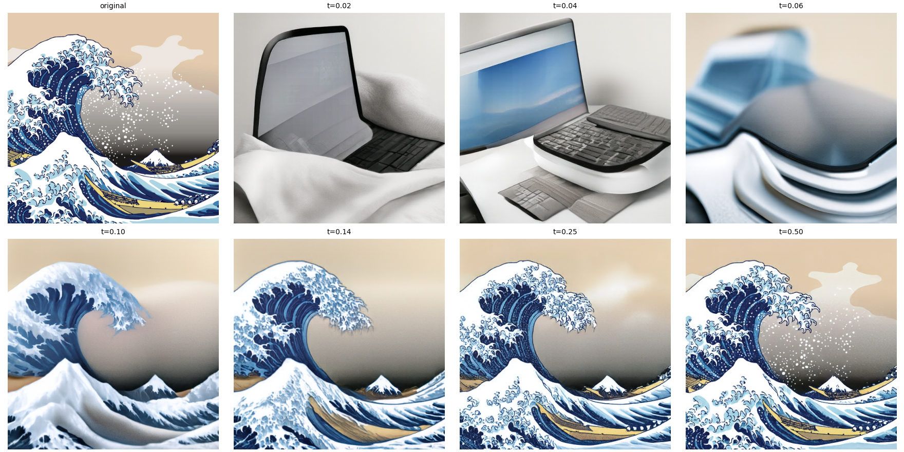
Web image.
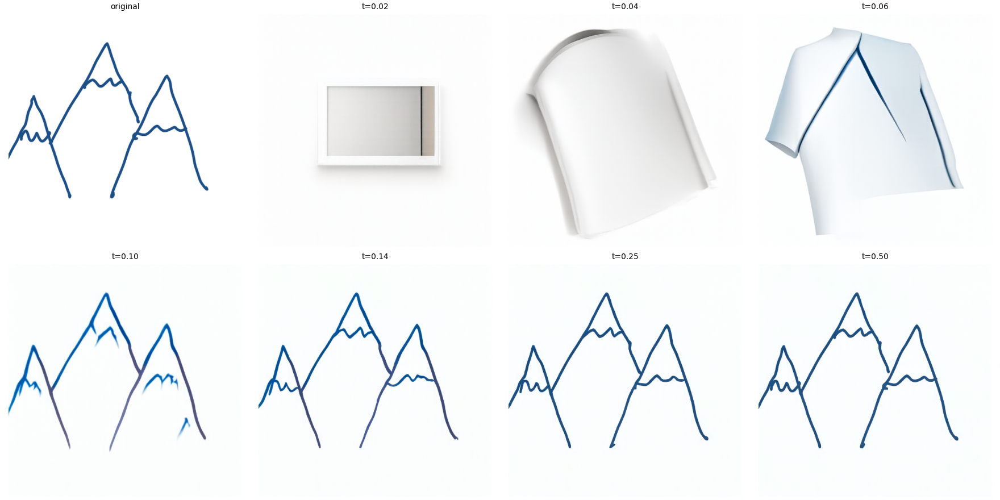
Hand-drawn image 1.
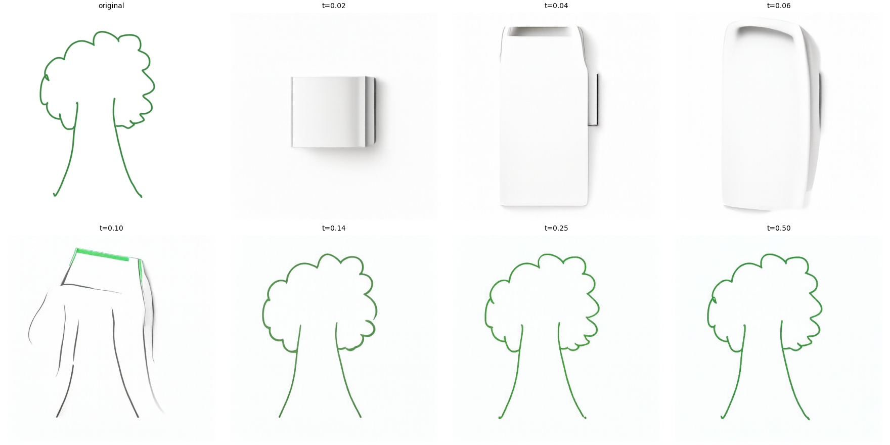
Hand-drawn image 2.
3.2 Text-Guided Image Editing
The same procedure and the same seven starting times, but the generic prompt is replaced by a prompt describing the desired edit. Smaller starting times add more noise
and give the prompt more room to change the image, while larger starting times preserve more of the original.
Campanile:a photograph of a rocket on a launch pad
My image 1:a photograph of a field of flowers with a mountain at sunset
My image 2:a photograph of a Japanese temple in winter covered in snow
Campanile with the rocket prompt.
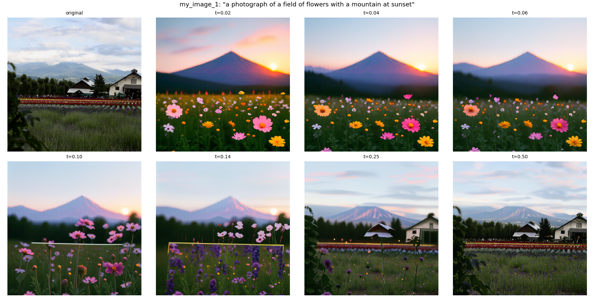
My image 1 with its prompt.
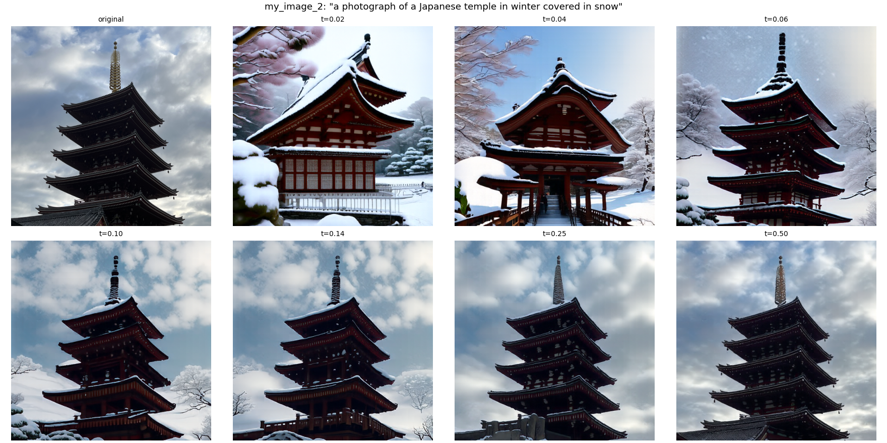
My image 2 with its prompt.
3.3 Visual Anagrams
A visual anagram looks like one thing upright and like another when rotated by 180 degrees. At each Euler step I compute the CFG velocity of $x_t$ with prompt $c_a$,
rotate $x_t$ by 180° (flipping both spatial axes), compute the CFG velocity with prompt $c_b$, rotate that velocity back, and average the two:
where $F$ is the 180° rotation. The averaged velocity is used for the usual Euler update. Both illusions below use $w = 7$ and $h = 0.02$.
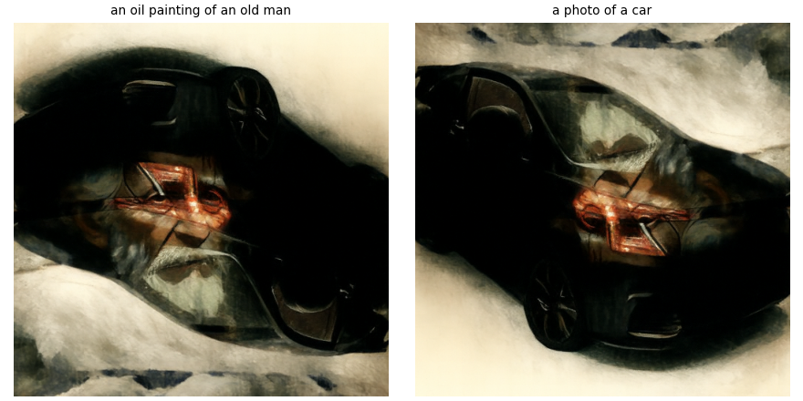
Upright: "an oil painting of an old man". Rotated 180°: "a photo of a car".
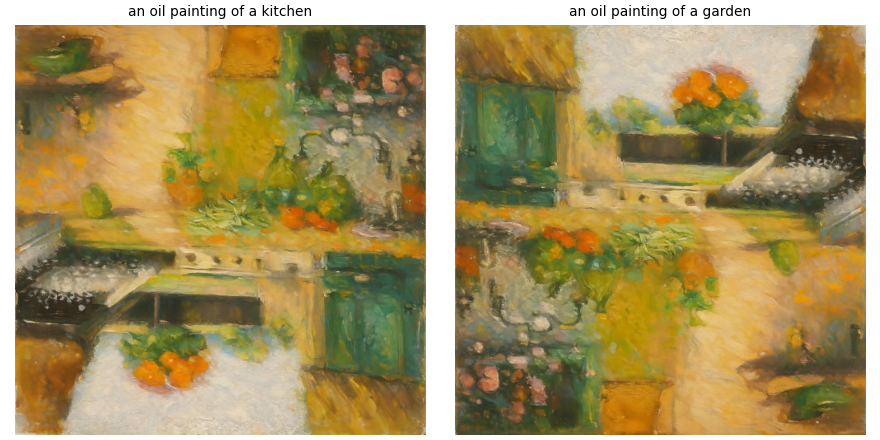
Upright: "an oil painting of a kitchen". Rotated 180°: "an oil painting of a garden".
These results were obtained after trying out different prompts.
3.4 Hybrid Images
A hybrid image shows one thing up close and another from far away, following Factorized Diffusion. At each step I predict a CFG velocity for each prompt, take the low
frequencies of the first and the high frequencies of the second, and use the sum as the Euler velocity:
Prompt $a$ sets the distant structure and prompt $b$ sets the close-up detail. The low-pass filter is a Gaussian blur with kernel size 265 and $\sigma = 16$ at
$512 \times 512$, and the high-pass is the prediction minus its low-pass version. The same image and time are used for both CFG predictions.
Hybrid 1: close = autumn leaves, distant = pumpkin
Full size: "a lithograph of a pile of autumn leaves".Reduced to 64×64: "a lithograph of a pumpkin" is visible from far away.
Hybrid 2: close = rocky mountains, distant = old man
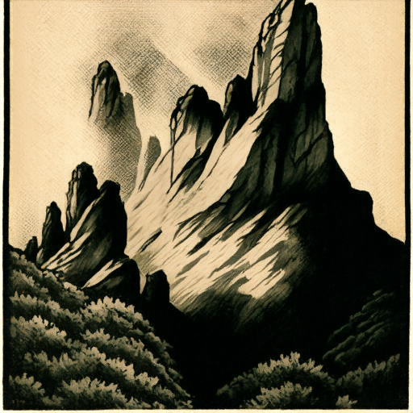
Full size: "a lithograph of rocky mountains" is visible up close.Reduced to 64×64: "a lithograph of an old man" is visible from far away.
These results were obtained after trying out different prompts and adjusting the parameters.
Part B: Flow Matching from Scratch
Part 1: Training a Single-Step Denoising UNet
1.1 Implementing the UNet
The UNet is built from a few simple operations, all shape-preserving except where noted. Each is followed by BatchNorm and GELU.
Conv: Conv2d(k=3, s=1, p=1), which keeps the resolution and changes only the number of channels.
DownConv: Conv2d(k=3, s=2, p=1), which halves the resolution (28→14→7).
UpConv: ConvTranspose2d(k=4, s=2, p=1), which doubles the resolution (7→14→28).
Flatten: AvgPool2d(7), which turns a 7×7 map into 1×1.
Unflatten: ConvTranspose2d(k=7, s=7, p=0), which turns a 1×1 map back into 7×7.
ConvBlock = Conv → Conv, DownBlock = DownConv → ConvBlock, UpBlock = UpConv → ConvBlock. These make the network deeper without changing sizes.
With $D$ hidden channels, the network is: ConvBlock ($1 \to D$, 28×28), DownBlock ($D \to D$, 14×14), DownBlock ($D \to 2D$, 7×7), Flatten and Unflatten ($2D$, 1×1 → 7×7),
then UpBlock ($4D \to D$, 14×14) after concatenating the 7×7 skip, UpBlock ($2D \to D$, 28×28) after concatenating the 14×14 skip, ConvBlock ($2D \to D$) after concatenating the
28×28 skip, and a final Conv2d ($D \to 1$). Concatenating a skip connection along the channel dimension doubles the channel count, which is why the up blocks take $4D$ and $2D$ inputs.
1.2 Using the UNet to Train a Denoiser
The denoiser $D_\theta$ is trained to map a noisy image $z = x + \sigma\epsilon$, $\epsilon \sim \mathcal{N}(0, I)$, back to the clean image $x$ with an L2 loss
$L = \mathbb{E}\,\|D_\theta(z) - x\|^2$. The figure shows the noising process on MNIST digits for
$\sigma = 0.0, 0.2, 0.4, 0.5, 0.6, 0.8, 1.0$ (left to right), and the digits get noisier as $\sigma$ increases.
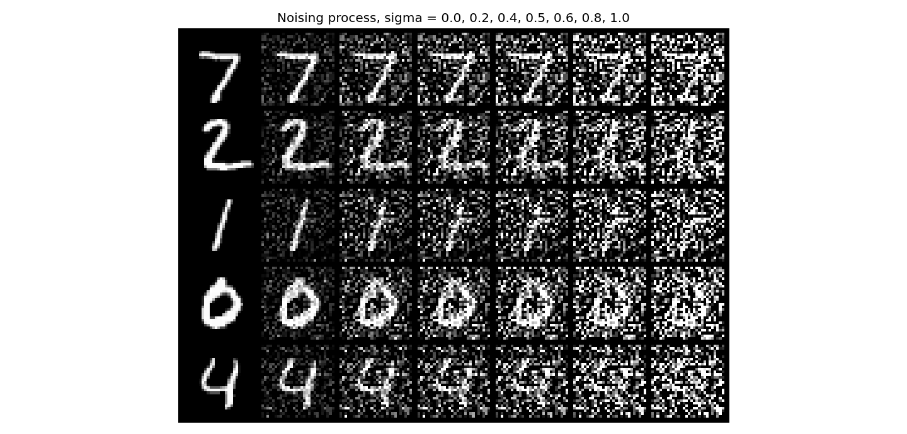
Noising process for $\sigma = 0.0, 0.2, 0.4, 0.5, 0.6, 0.8, 1.0$.
1.2.1 Training
I trained on the MNIST training set only, shuffled, with batch size 256, hidden dimension $D = 128$, Adam with learning rate $10^{-4}$, noise level $\sigma = 0.5$, for 5 epochs.
Noise is sampled fresh for every batch when it is fetched, so each epoch sees new noisy versions of each digit.
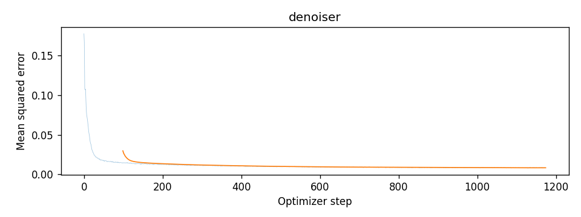
Training loss (MSE) over all optimizer steps.
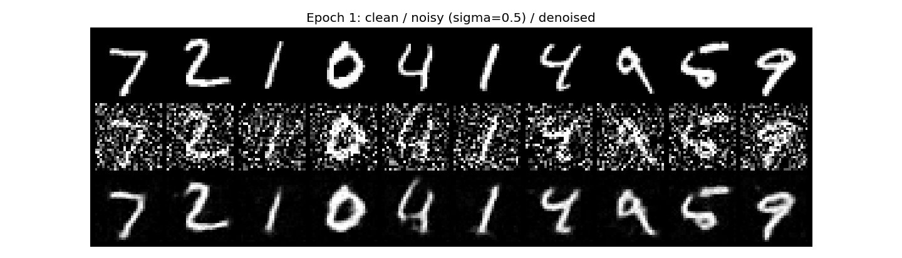
Held-out test digits after epoch 1: clean (top), noisy with $\sigma = 0.5$ (middle), denoised (bottom).
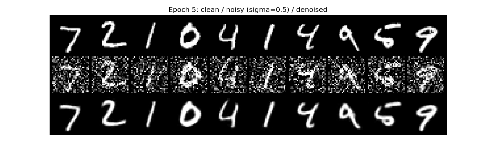
The same test digits after epoch 5.
The loss drops quickly early on and then plateaus, and after one epoch the digits are already recognizable but are still slightly blurry. After five epochs the strokes are sharper and cleaner.
1.2.2 Out-of-Distribution Testing
The denoiser was trained only on $\sigma = 0.5$. Here I keep the same test image and the same noise direction and vary $\sigma$.
For each digit, one row shows the noisy input and the next row shows the denoised output.
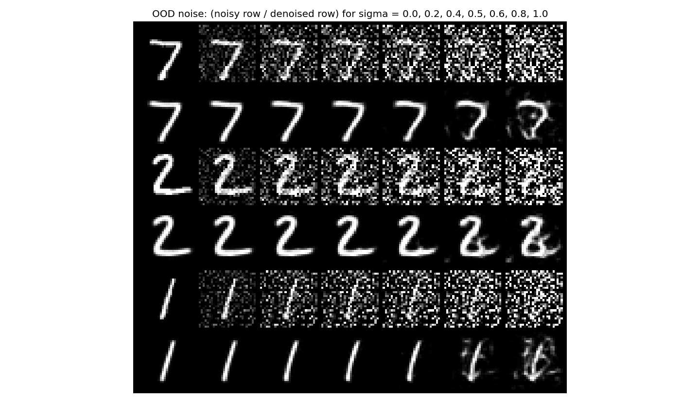
Noisy inputs and denoised outputs for $\sigma = 0.0, 0.2, 0.4, 0.5, 0.6, 0.8, 1.0$.
The denoiser works well at and below the training noise level, since those inputs are close to what it has seen. As $\sigma$ grows beyond 0.5 the outputs degrade into
artifacts and unclear strokes, because the network never learned to handle that much noise.
1.2.3 Denoising Pure Noise
To make denoising generative, I trained a fresh $D = 128$ UNet for 5 epochs (Adam, learning rate $10^{-4}$, batch size 256) where the input is pure Gaussian noise
$z \sim \mathcal{N}(0, I)$ and the target is a clean digit $x$.
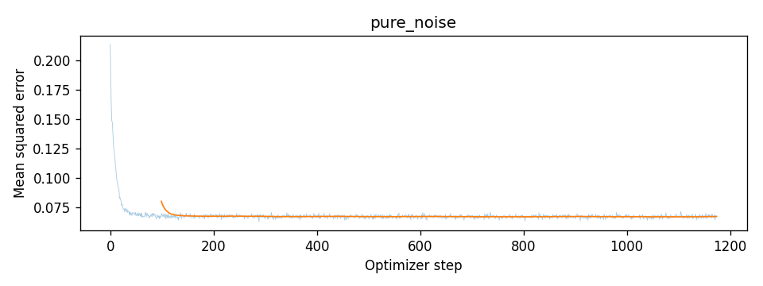
Training loss when denoising pure noise.
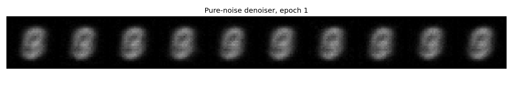
Held-out noise inputs after epoch 1.
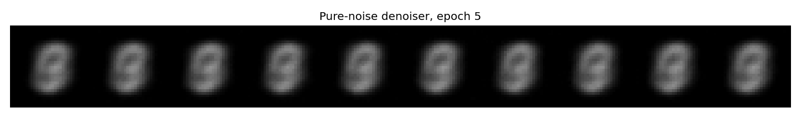
The same noise inputs after epoch 5.For reference: the per-pixel mean of the MNIST training set.
Patterns observed. Every output looks nearly like the same blurry, smeared blob, which is approximately a superposition of many digits, and it does not depend
on the noise input. The outputs are not recognizable individual digits.
Why. The input is pure noise that is independent of which digit is the target, so it carries no information about the answer. With an MSE loss, the best prediction for any input is then the
single point that minimizes the sum of squared distances to all training images, which is their mean, the centroid of the training set. The network therefore learns to output (approximately) the
average MNIST digit regardless of the input, and that is why the result resembles the mean image above. Generating real digits requires a model that moves gradually and uses the current image at each step, which is what flow matching does.
Part 2: Training a Flow Matching Model
2.1 Adding Time Conditioning to the UNet
Flow matching interpolates between noise $x_0 \sim \mathcal{N}(0, I)$ and a clean image $x_1$ by $x_t = (1-t)x_0 + t x_1$, which has constant velocity $\frac{d}{dt}x_t = x_1 - x_0$.
The UNet $u_\theta(x_t, t)$ is trained to predict this velocity with the loss $\mathbb{E}\,\|u_\theta(x_t, t) - (x_1 - x_0)\|^2$.
The network needs to know the time: near $t=0$ the input is mostly noise and the output must create the digit's overall shape, while near $t=1$ the input is almost clean and only small corrections are needed.
I inject the normalized scalar $t \in [0,1]$ through two FCBlocks (Linear(1, F) → GELU → Linear(F, F)) whose outputs scale the features:
unflatten = unflatten * t1 (after Unflatten, $2D$ channels) and up1 = up1 * t2 (after the first UpBlock, $D$ channels).
2.2 Training the Time-Conditioned UNet
For each batch I sample $x_0 \sim \mathcal{N}(0, I)$ and $t \sim U[0,1]$, build $x_t$, and minimize the MSE between $u_\theta(x_t, t)$ and $x_1 - x_0$.
Settings: batch size 64, hidden dimension $D = 64$, Adam with an initial learning rate of $10^{-2}$, exponential learning-rate decay with $\gamma = 0.1^{1/10}$ stepped once per epoch, 10 epochs.
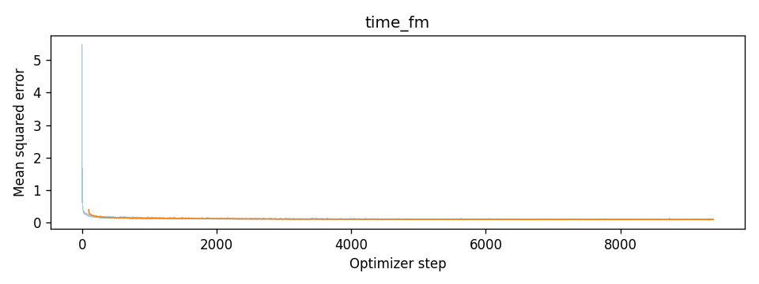
Training loss of the time-conditioned UNet.
2.3 Sampling from the Time-Conditioned UNet
Sampling starts from $x_0 \sim \mathcal{N}(0, I)$ and takes $T = 50$ Euler steps $x \leftarrow x + \tfrac{1}{T}\,u_\theta(x, t)$ with $t = i/T$, which integrates the learned flow from noise to a digit.
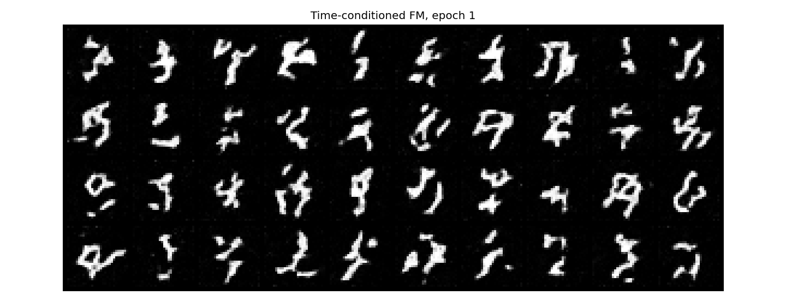
Epoch 1.
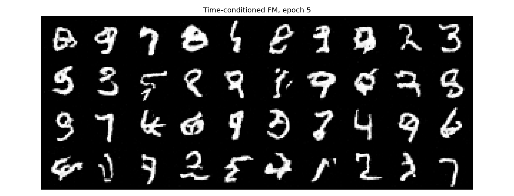
Epoch 5.
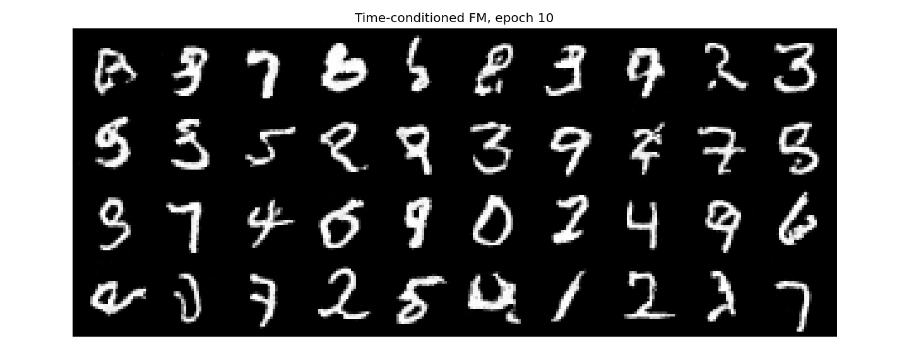
Epoch 10.
Unlike the pure noise denoiser, which collapses to one average blob, the time conditioned flow produces varied digit like images, and the strokes become clearer from epoch 1 to epoch 10.
The digits are not perfect and some are malformed, since the model is small and trained briefly, and also we do not control which digit comes out.
2.4 Adding Class Conditioning
To control which digit is generated and to improve quality, I also condition on the class. The class $c \in \{0,\dots,9\}$ is a one-hot vector (not a scalar) that goes through two additional
FCBlocks ($10 \to 2D$ and $10 \to D$). The features are modulated as
unflatten = c1 * unflatten + t1 and up1 = c2 * up1 + t2.
To keep the model usable without a class (needed for classifier-free guidance), the class vector is set to zero with probability $p_{uncond} = 0.1$ during training.
2.5 Training the Class-Conditioned UNet
The training is the same as for the time-only model, with a one-hot class label and the 10% class dropout: batch size 64, $D = 64$, Adam with an initial learning rate $10^{-2}$,
exponential decay with $\gamma = 0.1^{1/10}$ per epoch, 10 epochs, with checkpoints saved at epochs 1, 5 and 10.
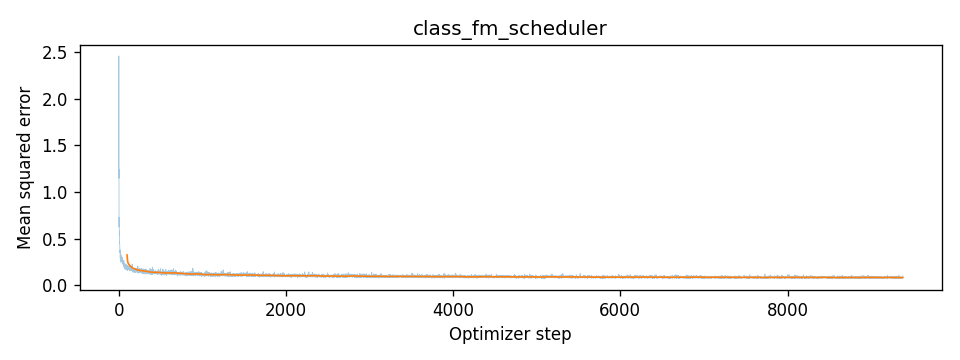
Training loss of the class-conditioned UNet (with scheduler).
2.6 Sampling from the Class-Conditioned UNet
I sample with classifier-free guidance, $u = u_{uncond} + \gamma\,(u_{cond} - u_{uncond})$ with $\gamma = 5.0$, using 300 Euler steps. Both predictions are computed from the same $x_t$ and $t$, and the
unconditional one uses the class vector set to zero. Each grid shows four instances of each digit (the columns are digits 0 to 9), generated with fixed seeds so the checkpoints are directly comparable.
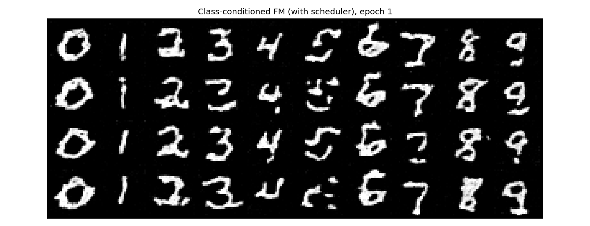
Epoch 1.
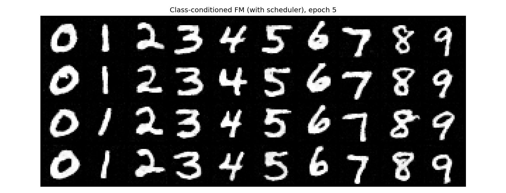
Epoch 5.
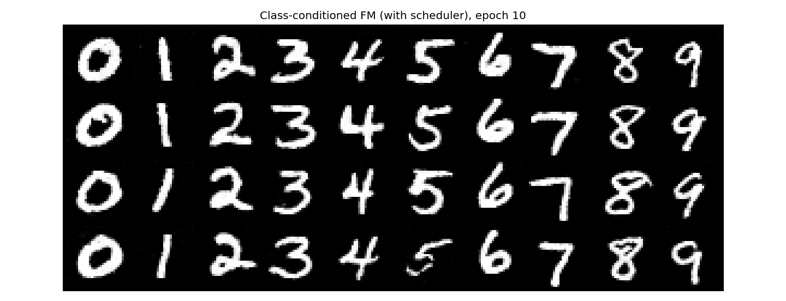
Epoch 10.
Class conditioning with guidance gives clear, correctly labeled digits already after a few epochs, which is why only 10 epochs are needed.
The number strokes become quite clear from epoch 5 onwards.
Removing the Learning-Rate Scheduler
To get rid of the exponential scheduler, I trained an independent class-conditioned model with a constant learning rate of
2e-3. The scheduled run decays its learning rate from $10^{-2}$ down to $10^{-3}$ over training,
so it takes big steps early and fine steps late. A constant $10^{-2}$ would be too large late in training and make the loss noisy, while a very small constant rate would be slow early.
I therefore picked a constant value close to the scheduled run's typical learning rate, which keeps the early learning fast enough and the late updates small enough.
Everything else (batch size 64, $D = 64$, 10 epochs, $p_{uncond}=0.1$, $\gamma=5$, seeds) was kept the same.
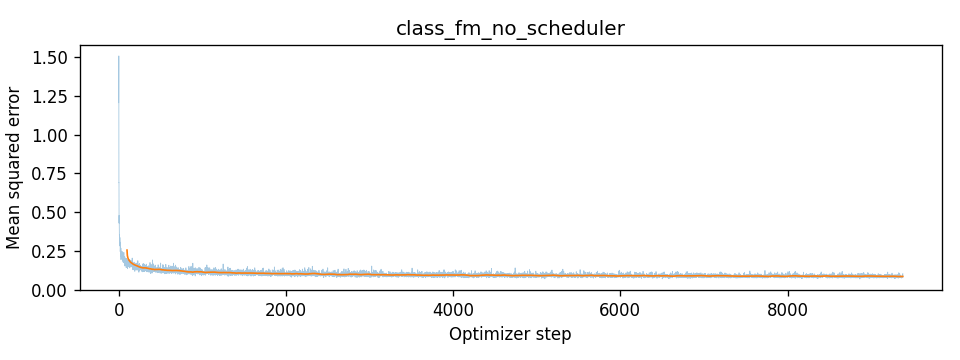
Training loss without the scheduler (constant learning rate).
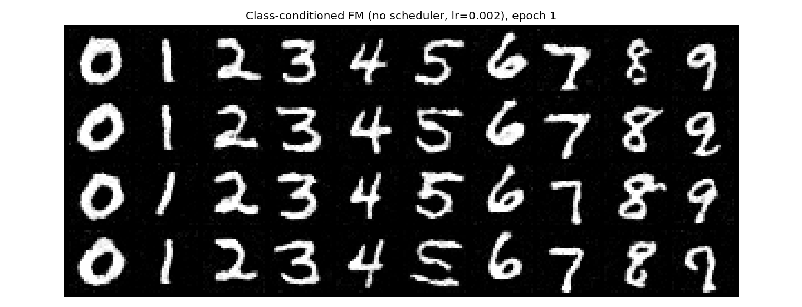
No scheduler, epoch 1.
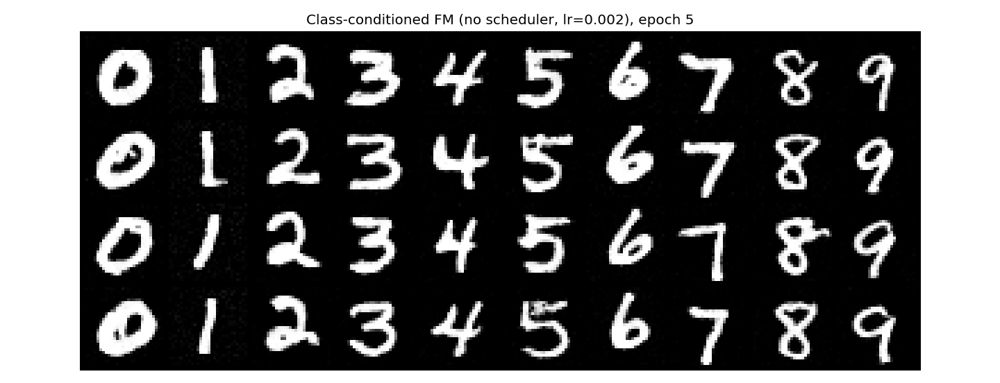
No scheduler, epoch 5.
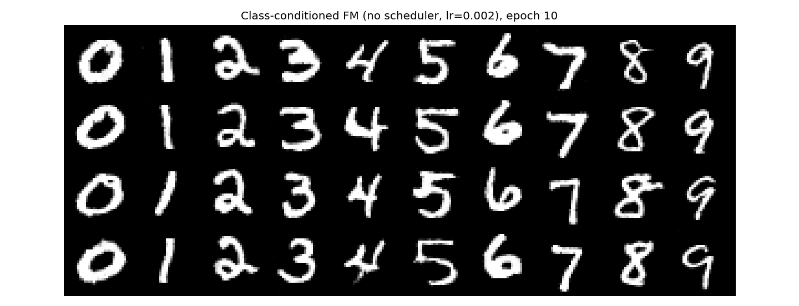
No scheduler, epoch 10.
The sample quality is slightly lower than the scheduled run, but the digits are still recognizable and correctly labeled. The strokes are a bit noisier, and some digits are less well-formed.
The constant learning rate is simpler to implement and does not require tuning the decay schedule, but it may need more careful selection of the rate itself to balance early and late training.
This highlights the trade-off between the simplicity of a constant rate and the extra tuning it needs.